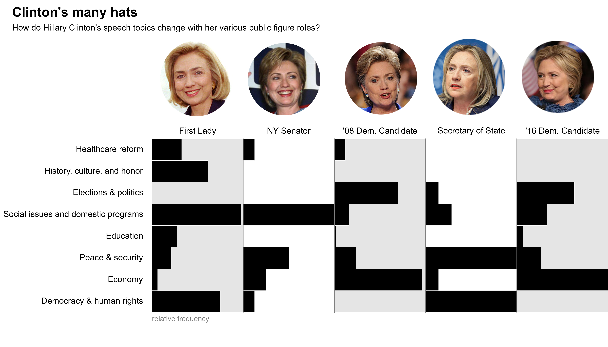

Speech Analysis Project
No matter what we talk about, we are talking about ourselves.
- author Hugh Prather
In one case out of a hundred a point is excessively discussed because it is obscure; in the ninety-nine remaining it is obscure because it is excessively discussed.
-Edgar Allen Poe
Original Project Description and Proposal
What people say is important. We remember people by the famous words they said, whether it be Martin Luther King Jr.'s "I have a dream", to J.F.K.'s, "Ask not what your country can do for you - ask what you can do for your country." In this day and age, what people say is even more important as everything can be recorded and archived indefinitely. We acutely see this in the news - the Huffington Post published an article today (April 17, 2016), titled, "Release of Clinton's Wall Street Speeches Could End Her Candidacy for President."
Thus, I propose to generate a corpus containing speeches, newspaper editorials, interview answers, and so on, labelled by their speakers/writers. With a large enough corpus, I can use an unsupervised machine learning algorithm to quickly cluster the texts into groups. These groups may reveal surprising connections between different people. However, it would be even more interesting to take new texts - the political speeches of current presidential candidates, in particular - and see which cluster each falls into. We could ask AND answer questions like: Is Donald Trump's rhetoric geometrically closer to that of Mother Theresa or Adolf Hitler? As many famous figures give many speeches, I also propose to work with people's individual corpuses. We could then see what the major themes are that create each cluster, and thus are seemingly most important to that person (assuming a politican's talk is genuine). By including the speech's date as a variable, we could even create a timeline showing how themes change with respect to time. Again, current political candidates' speeches would be ideal for such a project - they talk a lot, as well as flip-flop a lot, and using a computer to figure out what they supposedly care about is much easier and more enjoyable than listening to all of that talk!
This project would be interesting to the general public, as it involves famous, notable people, both villainous and (literally) saintly, as well as current politicans. It could even be interactive, by allowing a user to upload something they have written (or any piece of text not in the corpus) and then returning a list of the closest speakers and speeches/texts as well as the most common, important words that led to how the user's text was clustered. Having interesting, interactive visualizations of the relationships between their text and the famous words of others would engage users as well.
For preliminary plots and proof-of-concept, see
here.
NOTE: This project is not meant to express any particular political affiliation or intent. My only motivation is to apply machine learning and natural language text processing techniques to a fun and interesting domain.
Previous Speech Analyses of the Presidential Candidates
Analyzing every aspect of a politian's way of speaking is
a popular hobby these days. From way back in 2007, when then-Senator
Barack Obama was celebrated for his deep and resonant
Smoker's voice", to
present day's countless articles attacking or defending Hillary Clinton
purely on the basis of her speaking tone.
These previous analyses have only been qualitative. Now, however,
we can start taking apart the 2016 POTUS candidates' speech patterns
based on numeric metrics. For example, the Wall Street Journal's article, What Speech Patterns Say About the Presidential Candidates, looked
at how many unique words they use, on average, and what the total number of words spoken was:

In contrast, the New York Times recent article,
Ted Cruz as Beowulf: Matching Candidates With the Books They Sound Like, examined which books
each candidates' speech patterns most likely resemble, based on
quantifying their speaking styles as complex (e.g. Beowulf) or simple (e.g.
Adventures of Huckleberry Finn), and negative (e.g. Ulysses") or
positive (e.g. The Divine Comedy: Paradise):

Hillary Clinton vs. Donald Trump
For this project, I focus on the speeches
of the two 2016 POTUS front-runners, Democratic candidate Hillary Rodham Clinton and Republican candidate
Donald John Trump. I choose these two candidates to
analyze because they are the current front-runners in the race to the
White House, and thus among the most relevant people existing in the world right now. They both have been public figures for decades now, resulting in a large collection of speeches, talks, interviews, and books. They have distinct speaking styles as well as distinct topics of interest, thus making this project more interesting for viewers who are not so politically-inclined.
Clinton's Speech Corpus
While Hillary Clinton has been in the public eye for many years and thus given many public talks, these transcripts are unfortunately not in a single place. I was able to gather 490 unique transcripts by scraping the following websites:
The speeches span from May 31 1969, when she gave the Wellesley College Student Commencement Address, to April 26 2016, when she gave remarks on American manufacturing and improving the economy. However, most of the transcripts come from three distinct periods: First Lady (1993-1997), the 2008 Presidential Election, and the current 2016 Presidential Election. During her tenures as Senator of New York and Secretary of State, I could not find as many publicly available transcripts. However, they are undoubtedly archived somewhere, and will eventually be included into the final results.
Due to the controversay of using her private email account, the State Department also publicly released nearly 7,000 pages of Clinton's (heavily redacted) emails from her time as Secretary of State. While I did not include these in the current analysis, it would be super interesting to compare her private emails to her public statements. What would also be interesting is to
see the transcripts to Hillary Clinton's paid Wall Street speeches, which are still garnering news today (e.g. Chicago Tribune: What Hillary Clinton said behind closed doors).
Methodology
Results
Clinton's Word Hierarchy: What are her most frequent words and terms?
We can count how many times Hillary Clinton uses a specific word or phrase in each speech. By normalizing these counts by the length of the speech and the overall frequency of the term in all of the speeches, we can then get the TF-IDF of each term in each speech. By summing this frequency over all of the speeches, we get Clinton's overall word frequencies. The top ten meaningful* words are:
- health & health care, 33.727 & 22.235
- school, 28.210
- education, 21.381
- government, 21.031
- unite/united, 20.366
- child, 20.256
- vote, 19.628
- parent, 19.175
- security, 18.065
- issue, 17.871
*The only word that was taken out of this list was "lot", which had a summed frequency of 21.191.
8 Categories of Speech Topics
All of Clinton's 490 speeches in the corpus are clustered into 8 groups. These groups are found automatically by the computer algorithm, solely based on the terms in each speech. After running the algorithm 600 times, with 500 different randomized initial points, the speeches were found to consistently group into the same 8 categories. By getting the most meaningful* terms of each group, I could distinguish the primary topic of each group. These are as follow:
Healthcare reform: health, health care, insurance, hospital, medical, costs, plans, doctors, reform, nurses
History, culture, and honor: imagine, history, cultural, past, honored, White House, celebrate, historic, century, save
Elections & politics vote, Obama, campaigns, Democrats, election, winning, fight, parties, Republican, race
Social issues & domestic programsparents, child, schools, mother, violence, young people, health, programs, problems, read
Education schools, teachers, educated, students, parents, public, learn, child, kids, programs
Peace & security peace, security, United States, war, military, regions, effort, threats, violence
Economy paying, tax, economy, company, health, energy, college, costs, invest, plans
Democracy & human rights democracies, human, human right, girls, government, society, conferences, voice, educated, unites
* I neglected 4 terms:
- "lot", "got", and "I've got", in the Economy cluster, and
- "DR", in the Social issues & domestic programs cluster,
as they are not so meaningful in terms of sense (but clearly meaningful in terms of algorithm clustering).
Clinton's speech topics change with time
By plotting each speech in a scatterplot, with the speech date on the x-axis and the speech category on the y-axis, we can visualize how Clinton's speech topics change with time. The lines distinguish the different roles Hillary Clinton had at different time periods: First Lady of the White House (January 1993 to January 2001), New York State Senator (January 2001 to January 2007), 2008 Presidential Election candidate (January 2007 - June 2008), Secretary of State (January 2009 - Febraury 2013), and 2016 Presidential Election candidate (April 2015 - present).
We can look at a single speech topic, and then go across the plot to see how often she speaks about that topic.
For example, Healthcare reform was a very important issue for Hillary Clinton when she was First Lady and chair of the taskforce devising the Clinton health care plan of 1993, i.e. Hillarycare. This topic was also important during the 2008 POTUS election, when both she and then-senator Barack Obama both spoke at length of the need for healthcare reform. In contrast, healthcare reform is an issue Hillary Clinton does not talk at all about in the current 2016 POTUS election. The Affordable Care Act is already in effect, so healthcare reform is not an important issue in this election for a democratic candidate like Clinton.
Hover over any speech topic on the left side of the figure below, to get a fuller description of the topic, an explanation of how its frequency has changed with time, and excerpts from speeches clustered within that topic.

Let's look at histograms of the speech categories for each role Hillary Clinton held.
